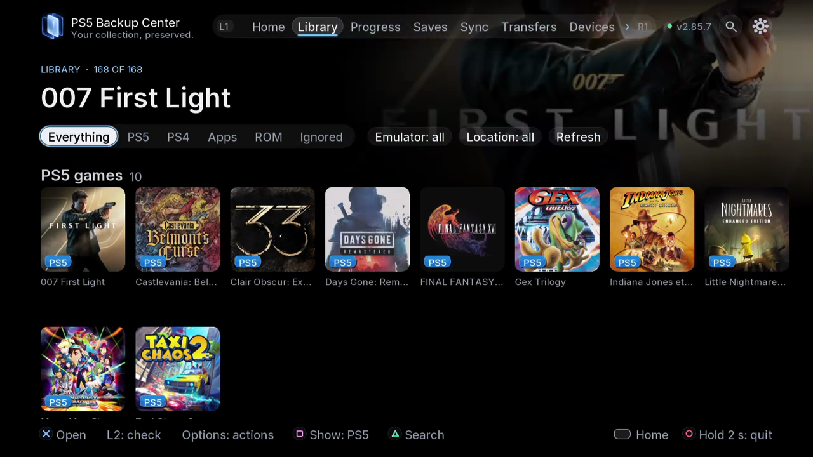

2.86.0
PS5 Backup Center
Xác định nội dung cần sao lưu, so sánh các bản sao hiện có và tổ chức trao đổi giữa thiết bị. PS5 Backup Center kết hợp danh mục, sao lưu, đồng bộ và truyền dữ liệu trên TV và trình duyệt.
Hướng dẫn →Xác định nội dung cần sao lưu, so sánh các bản sao hiện có và tổ chức trao đổi giữa thiết bị. PS5 Backup Center kết hợp danh mục, sao lưu, đồng bộ và truyền dữ liệu trên TV và trình duyệt.
Hướng dẫn →GitHub →Nội dung →Trang chủ gợi ý thao tác cho trò chơi chưa có bản sao đã biết, bản sao mới hơn, bản trùng, nội dung cần so sánh hoặc kiểm tra, đồng bộ thiết bị và tác vụ đang chạy. Thẻ thay đổi theo danh mục và thiết bị.
Hướng dẫn →
Kiểm tra nguồn được nhận diện và cấu hình từng giả lập. Xác nhận thư mục ROM, tệp cấu hình và nơi lưu; trở lại tự động sẽ dùng lại nhận diện. Trong chi tiết ROM chỉ chọn thành phần được cung cấp. ROM, trạng thái và bản lưu trò chơi khác nhau. Với Switch/Eden kiểm tra hồ sơ nhận.
Hướng dẫn →
Khôi phục đưa bản sao đã lưu thành tiến trình đang dùng của tài khoản được chọn. Thao tác này không cài trò chơi và không khôi phục toàn bộ máy.
Hướng dẫn →Ngày không đủ để biết tiến trình xa nhất. Chữ nội dung phân biệt dữ liệu, không phải thứ hạng.
Hướng dẫn →Kế hoạch lặp lại các lựa chọn sao lưu. Không phải tính năng tương lai tự đồng bộ khi đóng trò chơi.
Hướng dẫn →
Bản sao đã lưu và tiến trình đang dùng là hai loại khác nhau. Trò chơi đầy đủ được xử lý trong truyền dữ liệu. Chuẩn bị kế hoạch nhanh không có nghĩa là đồng bộ tự động liên tục.
Hướng dẫn →Sao chép giữ nguồn; di chuyển xóa nguồn sau khi kiểm tra đích. Nén không tự bảo vệ tiến trình đang dùng.
Hướng dẫn →Thêm NAS hoặc máy trong thiết bị và kiểm tra đúng máy trước khi lưu. Với NAS, chọn giao thức hỗ trợ, thử kết nối và chọn thư mục. Giữa PS5, xác nhận mã ghép đôi; với Switch chuẩn bị ftpd và bản xuất JKSV. FTP/FTPS đã có; SMB đang phát triển.
Hướng dẫn →
Chọn trong 19 ngôn ngữ và tám giao diện. Hiệu ứng âm thanh, nhạc nền và âm lượng được điều khiển riêng. Kiểm tra nguồn, mục bỏ qua, người dùng và thiết bị trước khi đổi liên kết. Có thể đọc lại thay đổi trong mục tin mới. Lời cảm ơn gồm tác giả, giấy phép và nguồn thành phần.
Hướng dẫn →TV và trình duyệt là ứng dụng khách của cùng động cơ. Đóng giao diện không tự dừng động cơ; tắt máy là việc khác.
Hướng dẫn →Chọn trong 19 ngôn ngữ và tám giao diện. Hiệu ứng âm thanh, nhạc nền và âm lượng được điều khiển riêng. Kiểm tra nguồn, mục bỏ qua, người dùng và thiết bị trước khi đổi liên kết. Có thể đọc lại thay đổi trong mục tin mới. Lời cảm ơn gồm tác giả, giấy phép và nguồn thành phần.


Xác định nội dung cần sao lưu, so sánh các bản sao hiện có và tổ chức trao đổi giữa thiết bị. PS5 Backup Center kết hợp danh mục, sao lưu, đồng bộ và truyền dữ liệu trên TV và trình duyệt.
Hướng dẫn →PS5 Center là dự án tương lai rộng hơn, có phạm vi và lộ trình sẽ được cùng xây dựng; không chỉ quản lý trò chơi và ứng dụng, và hiện chưa được phát triển.
PS5 Center →PS5 Connector nghiên cứu mở rộng khả năng của máy chơi game qua các trình kết nối và giải pháp hiện có. NAS, chia sẻ và USB chỉ là ví dụ, không phải phạm vi cố định. Chưa công bố nguyên mẫu hay ngày ra mắt.
PS5 Connector →